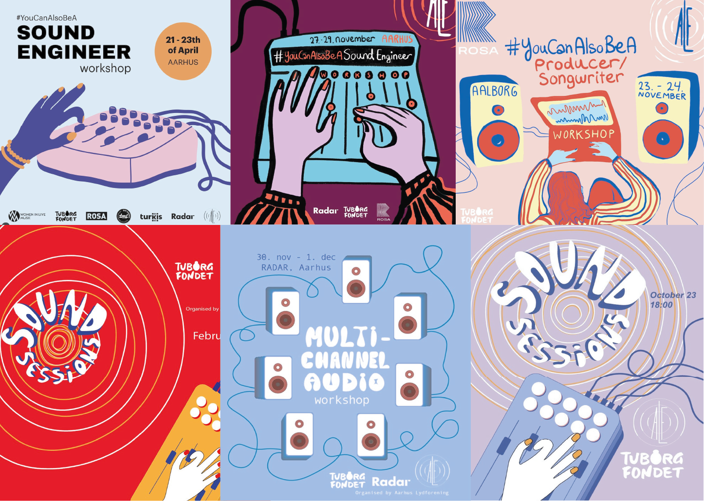

Mangler du inspiration til hvorfor du skulle foretage et besøg hos os? På denne side har vi samlt et lille udklip af hvad du kan komme og opleve på radar. Vi har nemlig et bredt udvalg af arrangementer, som du ikke vil gå glip af. Så hvad end du er til musik, oplevelser, læring eller bare gerne vil have en kold øl, så læs med herunder og bliv inspireret til dit næste besøg!

OPLEV FÆLLESSKAB
GENNEM MUSIK OG KREATIVITET

VI HÅBER DU ER BLEVET INSPIRERET & VIL KOMME OG HJÆLPE OS MED AT INSPIRERE ANDRE
Vil du høre når der er nyt fra os?
Skriv dig op til vores nyhedsbrev herunder, så skal vi nok opdatere dig om alle vores spændende arrangementer i fremtiden!